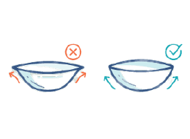
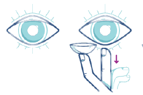
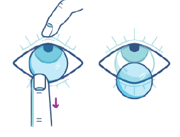
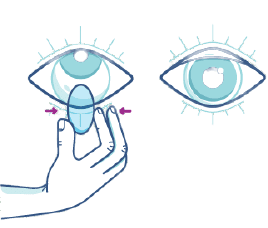

생활 속
콘텍트렌즈 착용
일상 생활 속 콘택트렌즈 착용법을 통해
활기찬 하루하루를 경험하세요!
콘텍트렌즈 착용법
-
비누나 손 세척제를 이용하여 손을 깨끗이 씻어준 후
마른 수건으로 손을 닦으세요. -
콘택트렌즈의 앞과 뒤를 확인하세요
검지 끝에 콘택트렌즈를 올리고 밝은 곳에서 렌즈를 관찰해보세요.
일부 제품에는 안팎을 구분해주는 1-2-3 표시가 있어 쉽게 확인할 수 있습니다.
숫자 123이 제대로 보이는지 반드시 확인해주세요.
123이 거꾸로 보이거나 모양이 바깥으로 향해 있다면 뒤집어주세요. -
오른손을 사용하세요.
한 손으로 위쪽 눈꺼풀을 잡아 깜빡이지 않도록 하고,
다른 손으로 아래 눈꺼풀을 잡고 아래로 살며시 당겨주세요. -
콘택트렌즈를 착용하세요.
검지 끝의 콘택트렌즈를 천천히 눈에 삽입하세요.
콘택트렌즈가 눈에 밀착된 후, 위쪽과 아래쪽의 눈꺼풀을 천천히 살며시 놓아서
눈을 깜빡이면서 콘택트렌즈가 빠져 나오지 않도록 합니다.
중요: 콘택트렌즈 또는 렌즈 케이스를 수돗물로 씻지 마세요.
콘텍트렌즈를 쉽게 착용하는 방법 4단계
- 
- 
콘텍트렌즈 제거법
-
손을 깨끗이 씻어주세요.
물기가 없도록 손을 닦고, 눈 안에 콘택트렌즈를 확인한 후
오른쪽 중지로 위 눈꺼풀을 위로 당겨 올리세요. -
중지로 아래 눈꺼풀을 약간 아래로 당겨 내리세요.
-
엄지와 검지 사이로 콘택트렌즈를 가볍게 집어내세요.
왼쪽 눈도 똑같이 반복하세요. -
일일 착용 콘택트렌즈 버리기
일일 착용 콘택트렌즈를 착용할 경우, 렌즈를 제거한 뒤 버리면 됩니다.
하지만, 2주 또는 한달 착용 콘택트렌즈의 세척과 소독은 매일 반드시 철저하게 지켜주세요.
중요: 콘택트렌즈 또는 렌즈 케이스를 수돗물로 씻지 마세요
콘텍트렌즈를 쉽게 제거하는 방법 4단계

- 
- 